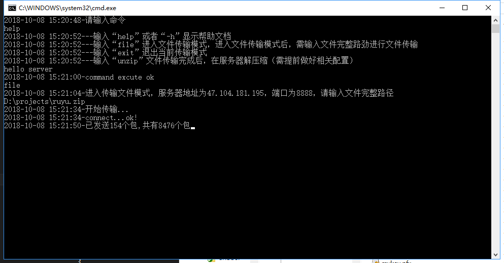
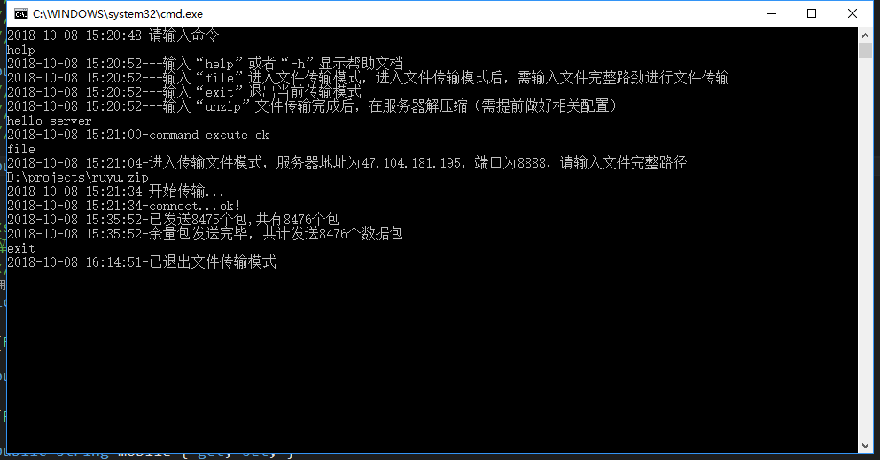
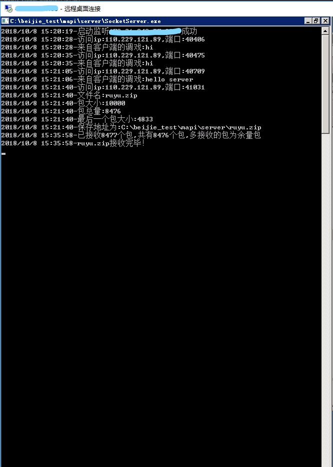
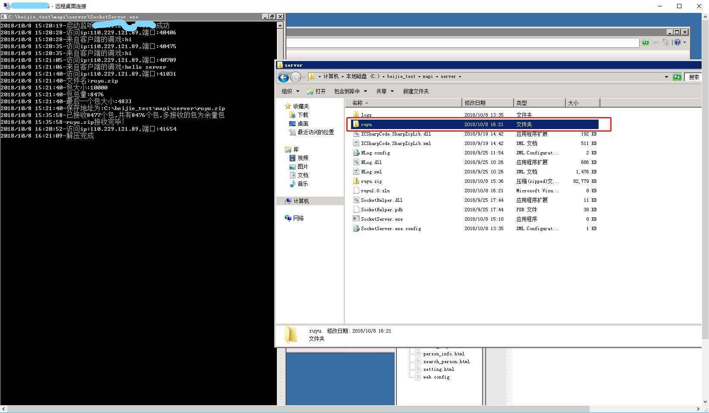
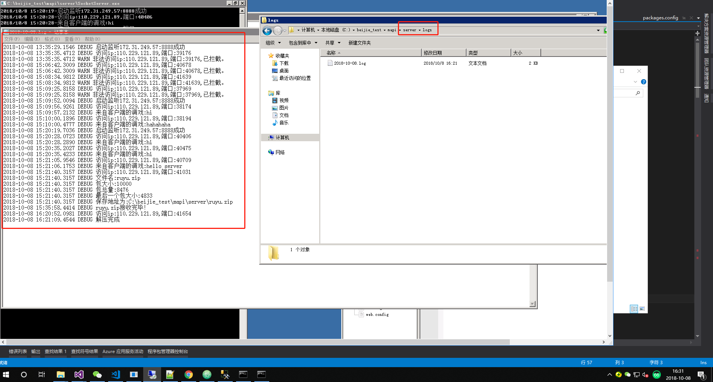
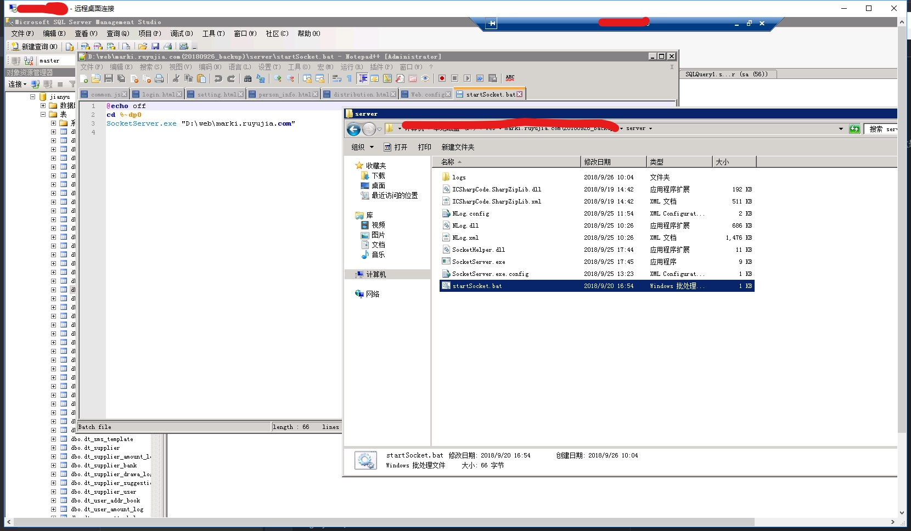

最近公司赶项目，由于时间，人手等问题，经理武断的决定把一个本来要做成app的项目做成手机web网站的形式。。。然后还把这个项目交给了一个后端开发人员（没错就是我(┬＿┬)）。。。
在做这个项目的是，由于采用的是webapi的形式和服务器交互，所以，这个手机web网站就是纯前端的东西，html+js。由于我对前端的项目部署方案不太了解，当我们需要把文件部署到服务器上测试的时候，每次都要远程连接服务器然后
把修改后的文件包括html,js,css以及一些图片等文件分别拷贝到服务器去进行测试，这样每次操作下来非常麻烦，而且容易丢文件，即便是每次把整个文件夹都拷过去也还是需要每次都远程服务器，而且大多数时候是不可以整
个文件替换的，因为难免会有一些公用的js文件里写了一些服务器地址等相关配置的地方，和本地是不一样的，当然还有一种比较普遍的解决方式就是用ftp的形式来传输文件，也很方便，但总感觉还可以在方便一点，在灵活一点，
联想到以前曾经做过一个socket的项目，就自然而然想到用把之前的项目拿来，精简一下，只留下传输相关的部分，就自制了一个快速部署静态文件，传输文件，以及信息交互的小工具。
好了，话不多说，先看东西（当然很丑，没有界面只是控制台程序）


客户端的命令行界面，目前只支持这几种命令，可以无限扩展，目前我需要的只是发送文件，发送压缩包和解压缩



服务端收到命令后，会执行相关命令，其中关于文件传输和解压缩的命令，在传输过程中，为了安全，需要在客户端和服务端代码中稍微做一下验证，比如我就加了一个“F_”来表示这是客户端发来的文件，
这里的文件解压用的是ICSharpCode.SharpZipLib插件，.net 环境下一个开源的也挺好用的文件压缩插件，推荐一下
当然还需要记录一下访问日志，这里用的是NLog插件
1 | //发送[文件名]到客户端 |
当然服务端接收的时候也要做相应的处理
还有因为接通外网的服务器端口是会被各种有意无意的扫描软件扫到的，所以用这个小工具的时候需要加一下ip验证，当然也可以做的更完善点，这个我就不多说了
对了，之所以做成控制台的形式，是我为了方便，可以做一个bat批处理文件，把它和服务端程序放在一起，把调用的参数写进去，做成服务，更加方便

好了，直接上代码了
socket相关的关键代码
1 | /// <summary> |
关键的上层调用类如下
1 | using NLog; |
好了大概就是这个样子，至于客户端和服务端交互上，我就不贴代码了，非常简单，而且我写的风格也没啥参考价值，最多就是多了一个思路，大家完全可以自己改造。完整代码在这→https://gitee.com/Tony_df/SocketProject